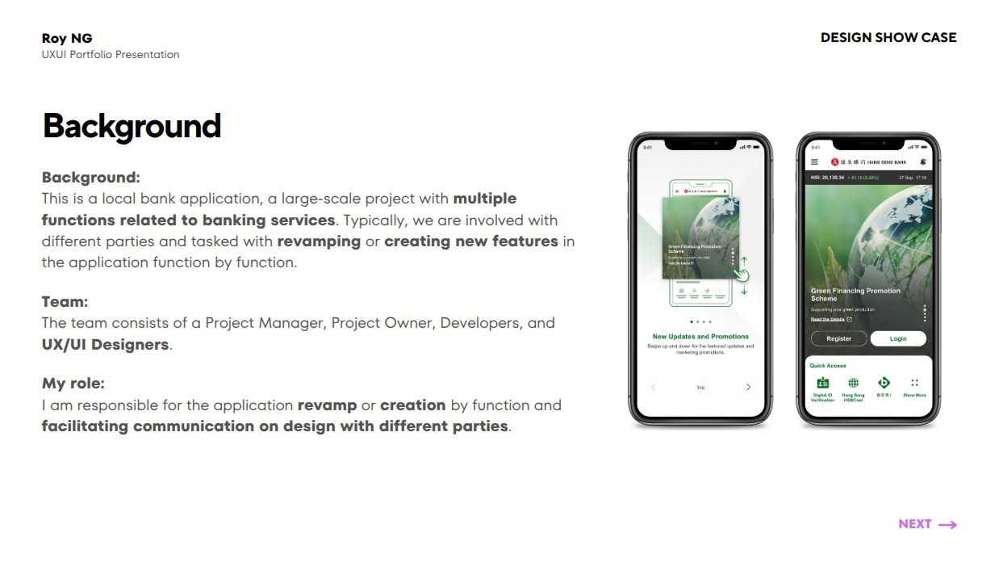
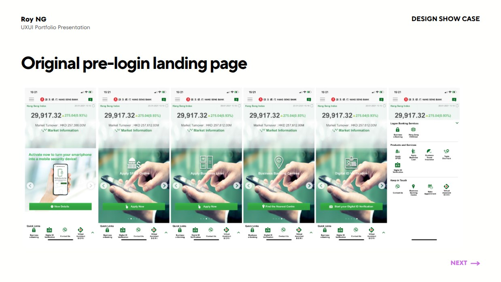
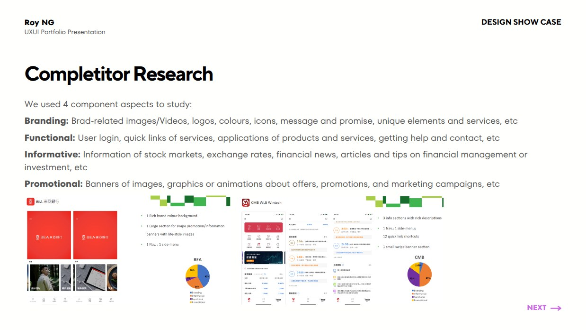
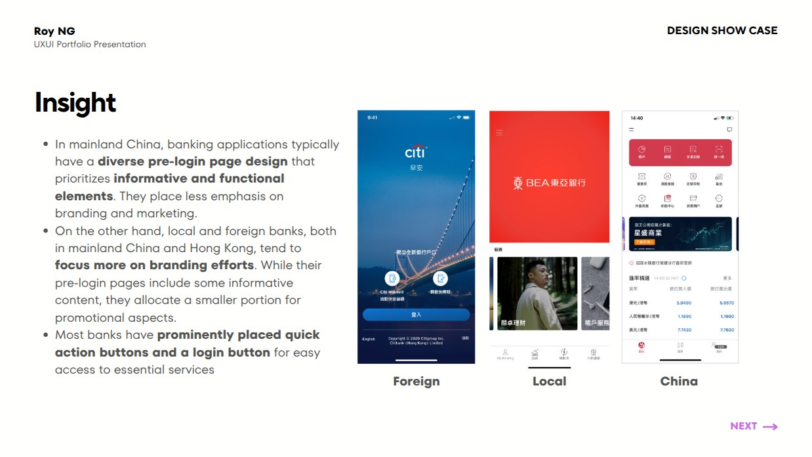
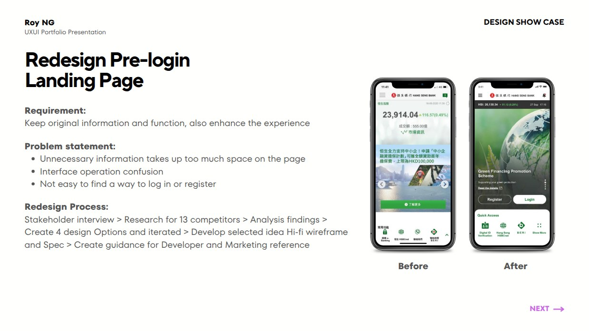
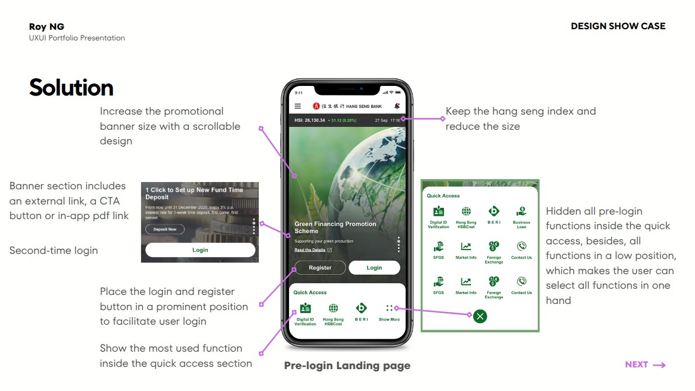
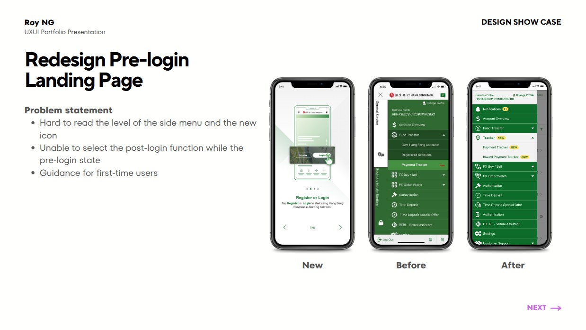
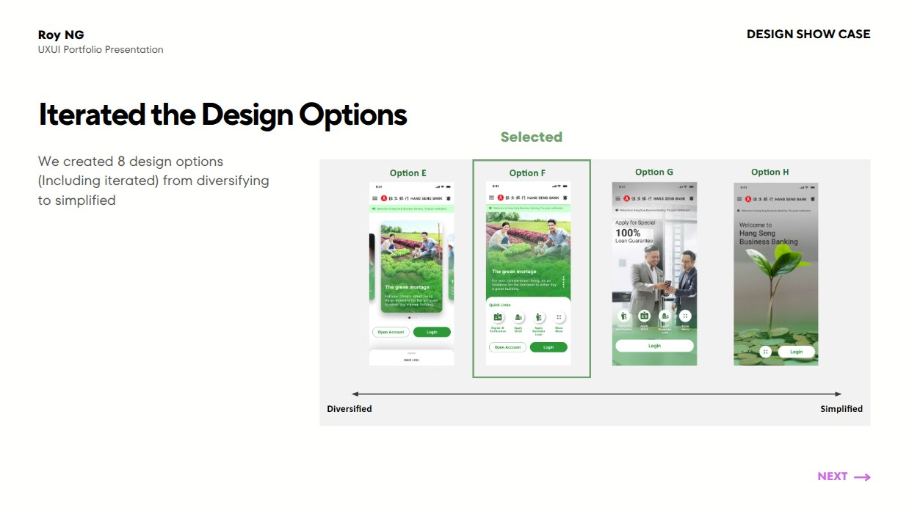
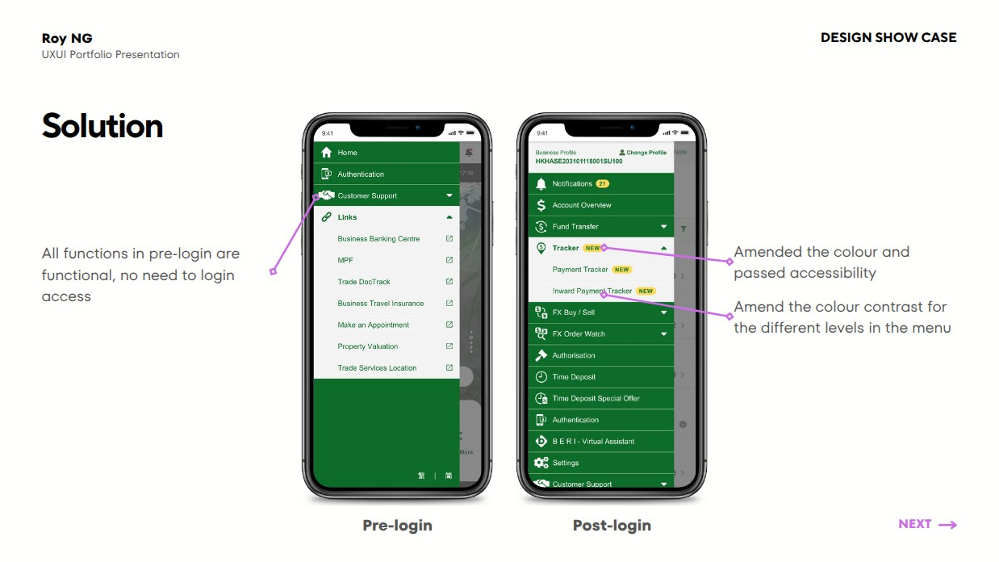
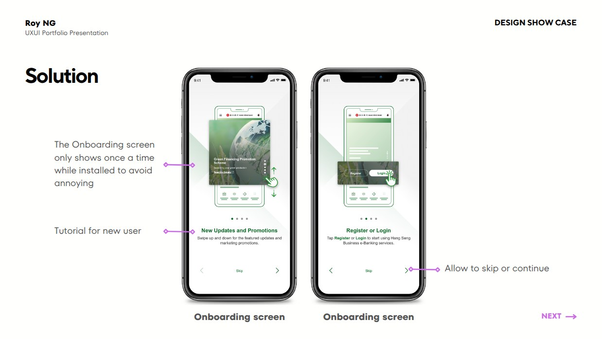

Redesigning the pre-login experience of a major HK banking app
The pre-login landing page is the front door of a bank. The legacy page buried login behind cluttered promotions. I led the redesign from research to developer handoff — and the screens below show the before, the research, and the final solution.
01 · Context & product screens

Project context
Original (Before)02 · Problem
- Low-value content dominated the screen — promotions crowded out the actions users came for.
- Login and registration were hard to find, generating drop-off and support calls.
- Interaction patterns were inconsistent, built over years by different vendors.
03 · Research & evidence

Competitor research
Insight- Benchmarked 13 banks across Mainland China, Hong Kong and overseas on 4 dimensions.
- Key insight: winners surface login + quick actions within thumb reach.
04 · Exploration → Solution

Before → After
Annotated solution
Menu & onboarding
Design options
Pre / Post login
Onboarding05 · Outcome
−40%*Fewer taps to reach login for returning users
8 → 1Design options iterated and converged with stakeholders
100%Screens delivered with dev-ready specs
*Measured against the legacy flow in internal walkthroughs.